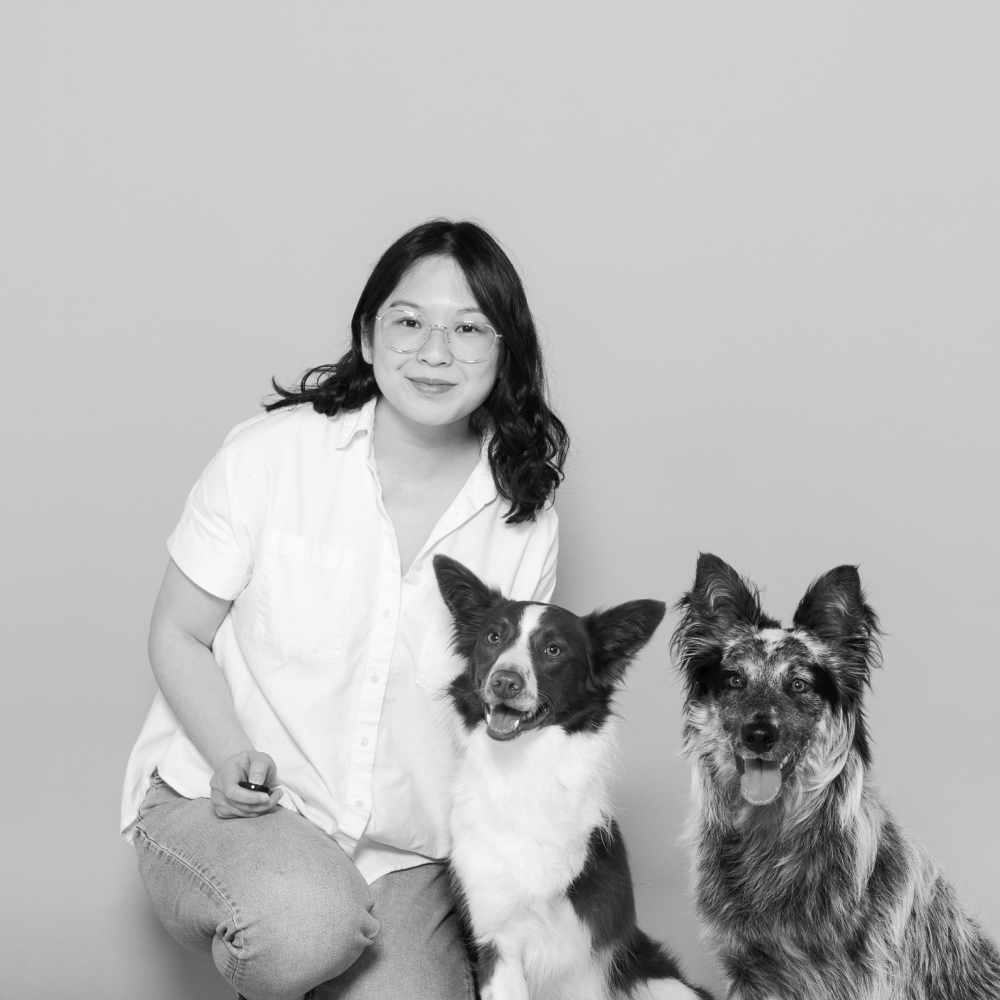

I graduated from the University of Washington with a Bachelor of Design in visual communication and a minor in informatics. I’ve learned to acknowledge and embrace the design process as fluid, never fixed. Some of my past collaborators include Microsoft, Google, Amazon, Curious VC, and Pioneer Square Labs.
Most recently I’ve obtained my certificate in front-end development as a complement to my design skills. Right now I’m freelancing, working on my own passion projects, and looking for my next opportunity in visual and/or UX design.
Freelance
Remote
2024 - present
Experience Designer
September Works
2021 - 2024
UX Research Assistant
University of Washington
2018 - 2021
